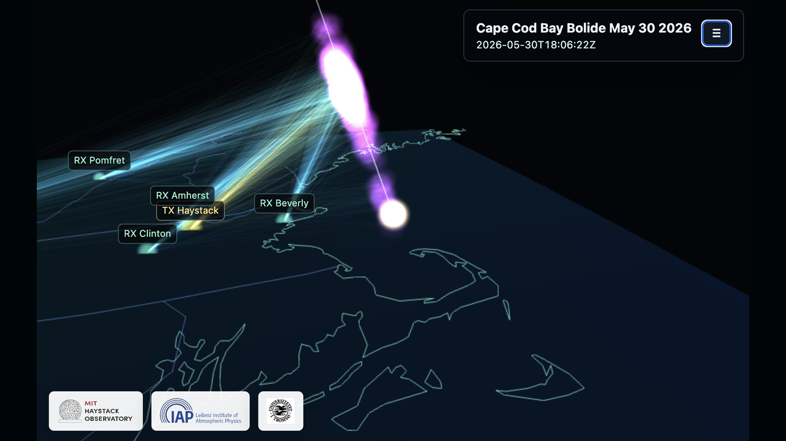
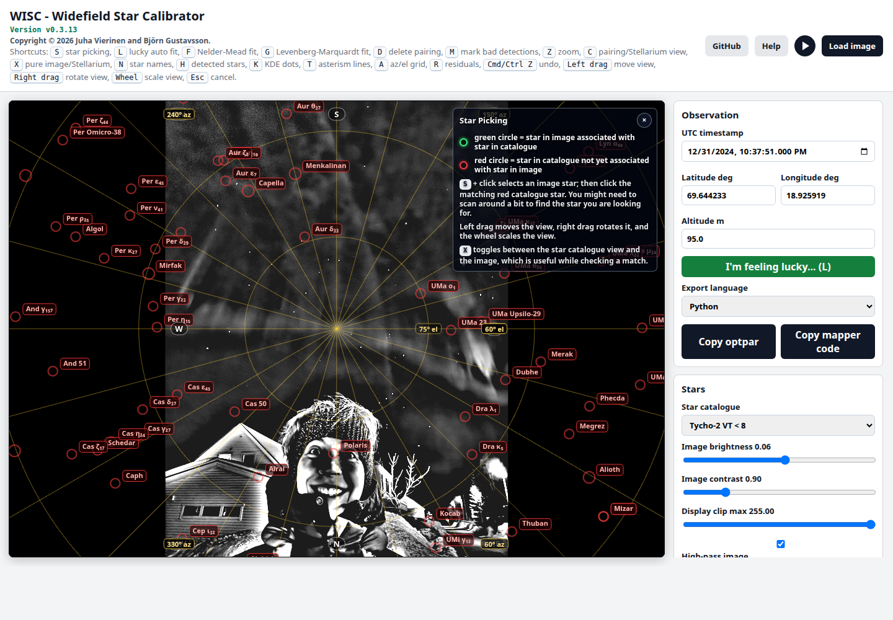
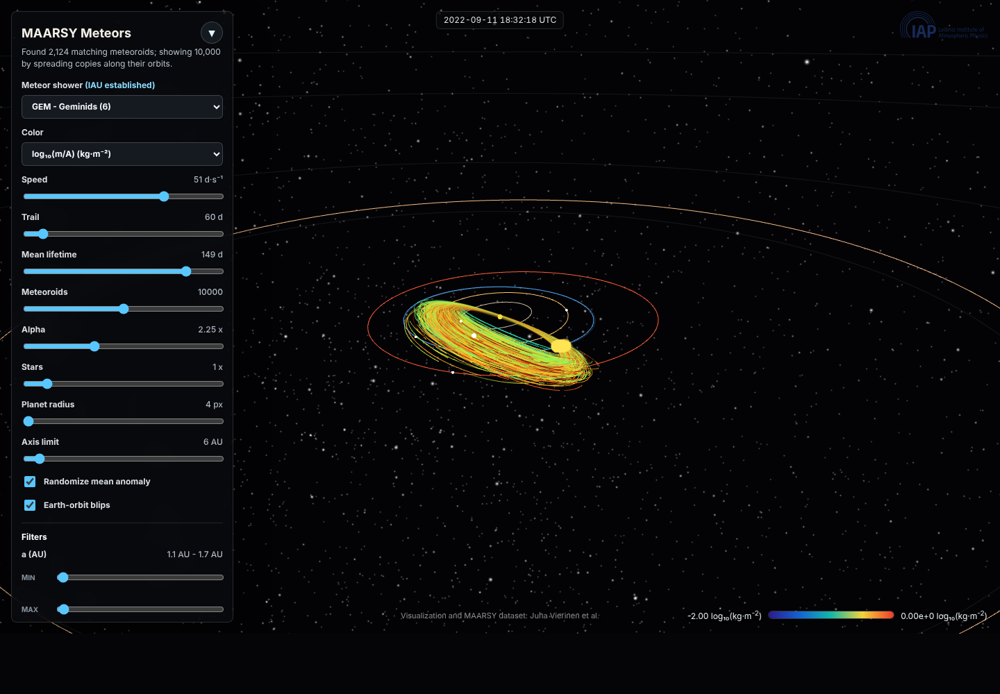
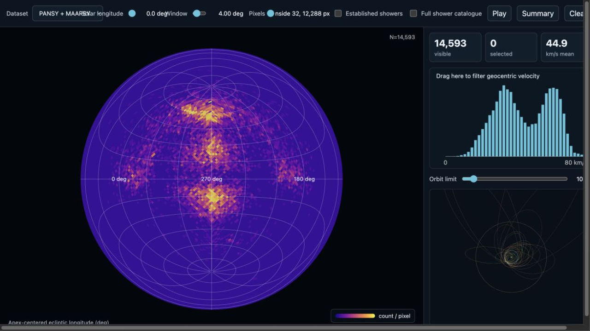
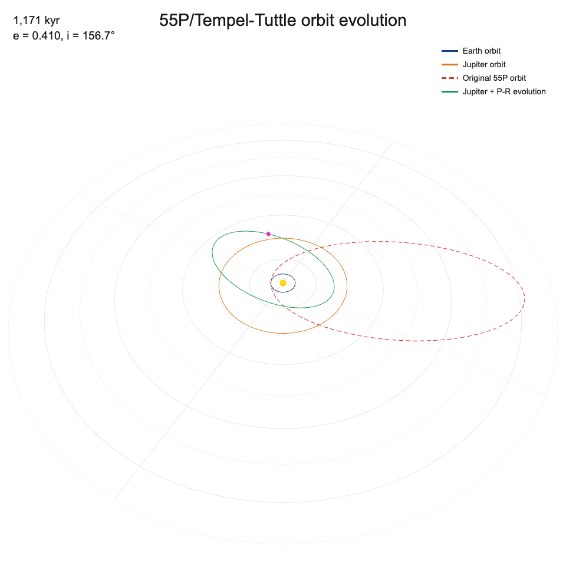
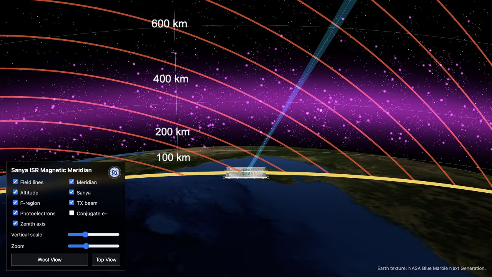
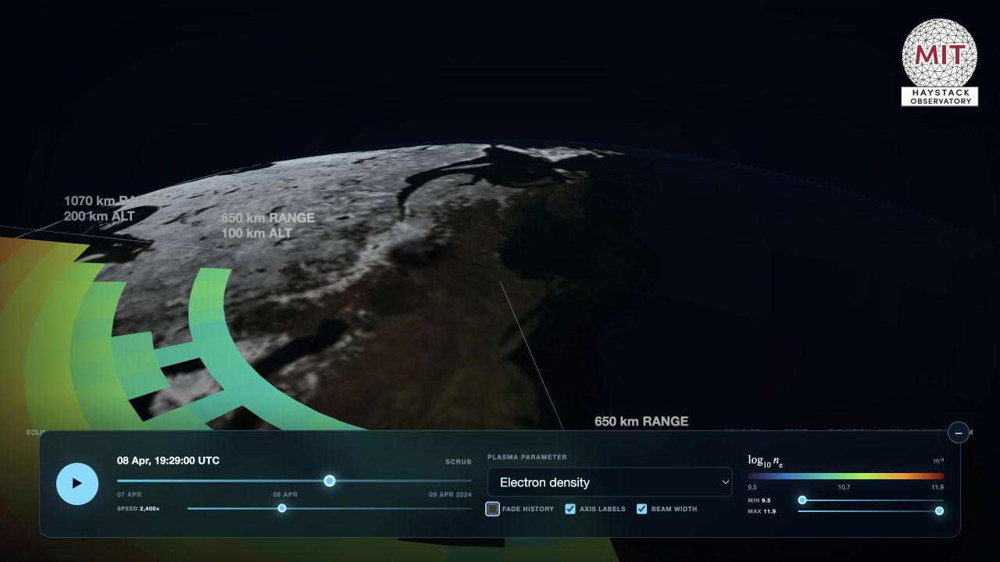
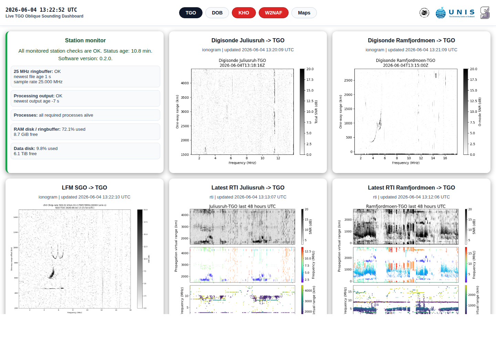
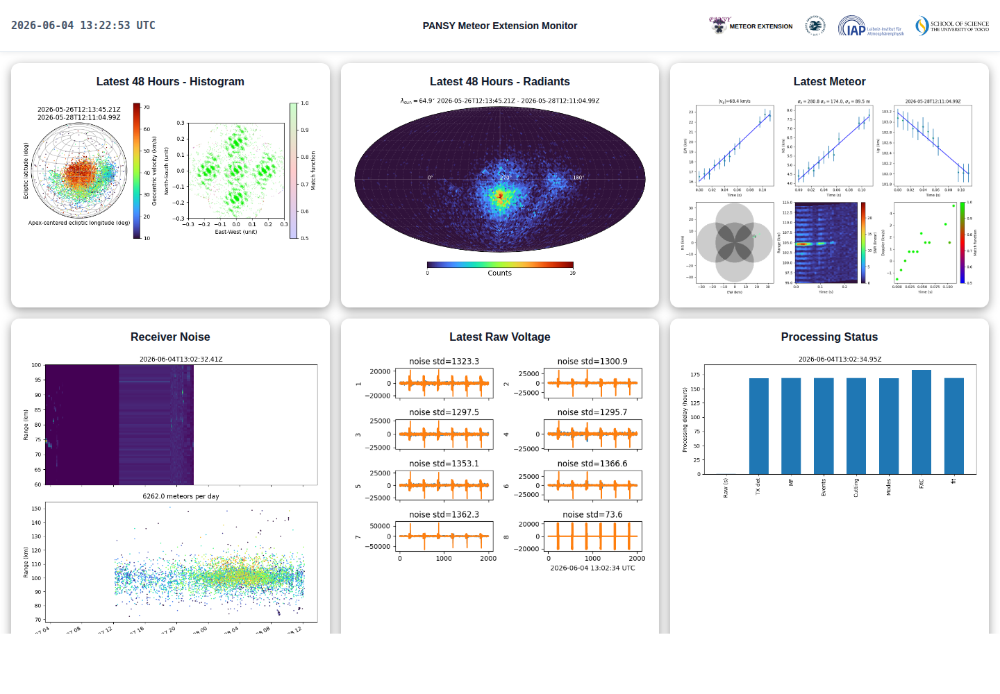
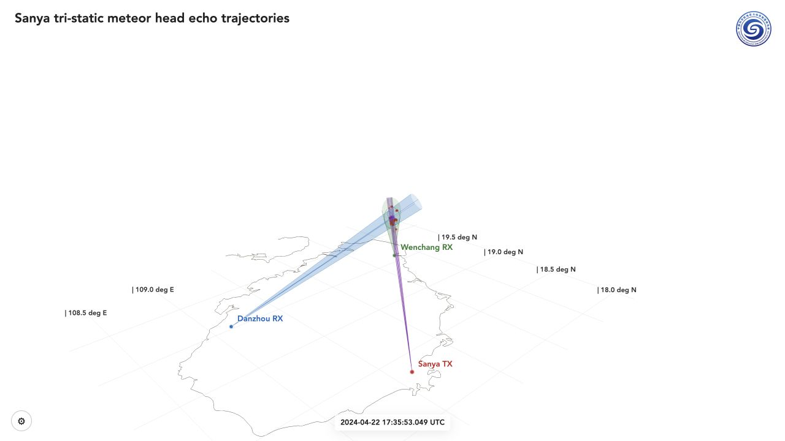

Cape Cod Bay Bolide
WebGL visualization of MIT Haystack multi-static radar plasma measurements, ballistic fit, and strewn-field simulation.

AIDA
Widefield star calibrator for all-sky imagery and catalog matching.

Meteors
Interactive MAARSY meteor orbit visualization and shower filtering.

Radiantviz
Interactive radiant, velocity, and orbit viewer for PANSY and MAARSY meteor detections.

55P/Tempel-Tuttle
Interactive WebGL visualization of secular Jupiter perturbations and Poynting-Robertson drag.

Bernstein Waves
Interactive magnetic-meridian view of Sanya ISR geometry and field-aligned plasma structure.

MISA Horizon Sweep
Interactive visualization of Millstone Hill's low-elevation radar scan during the 8 April 2024 solar eclipse.

Ionosonde
Live oblique sounding dashboard with station status and ionograms.

PANSY
Meteor extension monitor for recent detections and processing status.

Sanya Tri-static
WebGL visualization of tri-static meteor head echo trajectories from Sanya, Danzhou, and Wenchang.